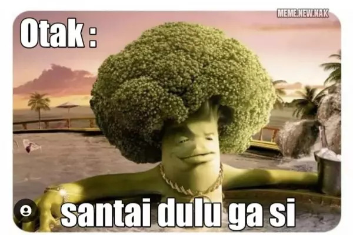

Kalvin Philipus Fasse
LinkedIn
GitHub
X
Ini adalah halaman web ke 4

Meme Wakanda
Dibuat oleh Kalvin Philipus Fasse
Inspirasi
- 1 Bungkus rokok
- 1 Gelas kopi kapal hitam
Bahan membuat kopi kapal hitam
- Siapkan gelas kotor 1
- Siapkan gula 5kg
- Siapkan air dingin 500ml
- Siapkan air panas 300ml
- Siapkan 1 sendok
Cara membuat kopi
- tinggal di campur dan sudah siap di minum